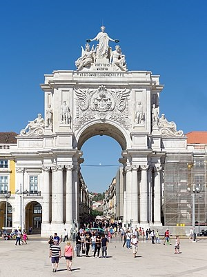

Lisboa
Introdução Localização Multimédia Informação
Localização
Lisboa está localizada na costa ocidental de Portugal, na foz do rio Tejo, e é cercada por colinas que oferecem vistas panorâmicas da cidade. A cidade é dividida em bairros distintos, cada um com a sua própria personalidade e charme.